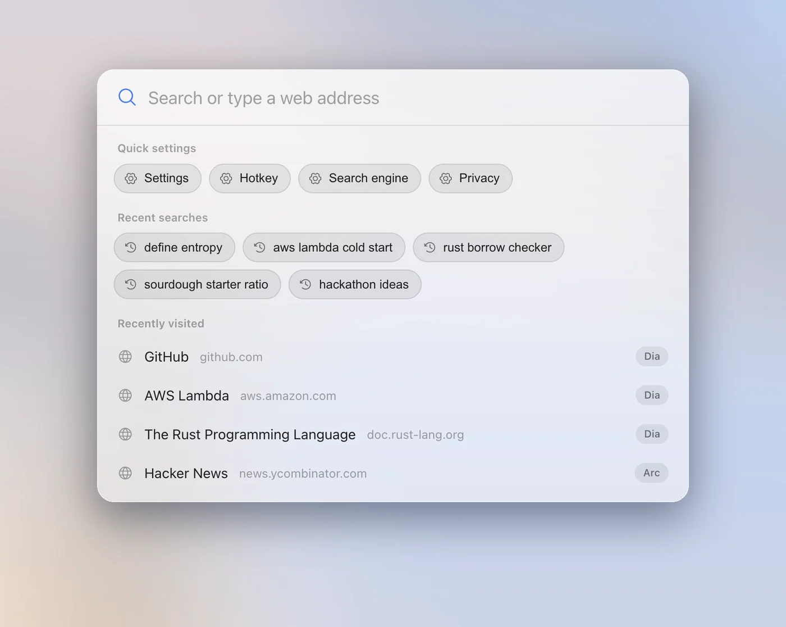
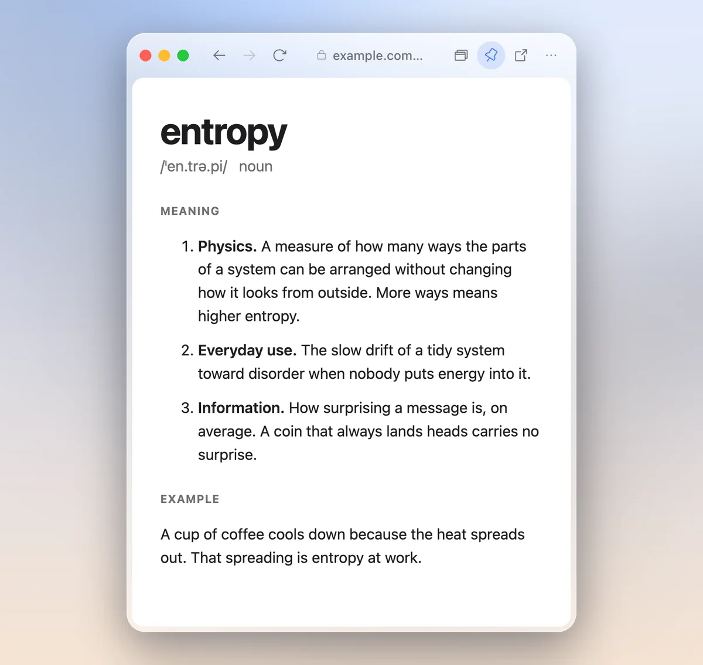
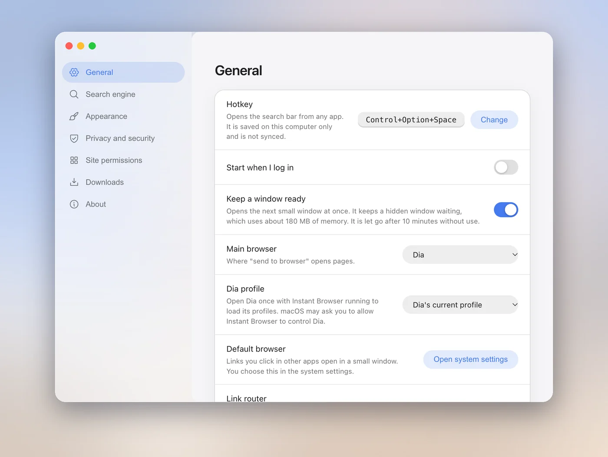

Your history, in one bar
Press the hotkey and see your recent searches and pages from Dia, Arc, Chrome, Edge, Firefox and more. It is read on your computer and goes nowhere.

Press a key, search, read. Then close it, or send the page to the browser you already use.

A definition. A form someone sent you in Teams. A link you only need for a minute.
Press the hotkey and see your recent searches and pages from Dia, Arc, Chrome, Edge, Firefox and more. It is read on your computer and goes nowhere.

One key sends the page to your main browser as a new tab. In Dia, pick the profile it opens in.
Hold Option and Command while you click a link in Teams to open it in a small window. A normal click goes to your main browser.
No Dock icon, no tabs, no start page. It uses about 320 MB when idle (it carries its own browser engine). A window kept ready for speed is let go after 10 minutes.

It uses the same engine as Chrome, with the same page sandbox. Some of Chrome's protection is a Google service, and that part is not here.
Looking for the newest version...
macOS 12 or later. Pick the one for your chip. Not sure? Apple menu, About This Mac.
Open the file and drag Instant Browser to Applications. This version is not notarized yet: on first start, right click the app and choose Open.
Windows 10 or 11, 64-bit.
The Windows build is early. If Windows warns you, choose More info, then Run anyway.
No. It is for quick things. When a page turns into real work, one key sends it to your main browser as a new tab.
It carries its own copy of the Chromium engine, like Chrome does. Each open window is two small programs: the toolbar and the page. In Settings you can turn off the ready window to save about 180 MB.
On your computer. Your history is read from your browsers' files, kept in memory, and a small saved copy lets the search bar start fast. It is never sent anywhere. Search suggestions send what you type to your search engine, and you can turn that off.
It checks this project's releases on GitHub every few hours, downloads a new version in the background, and installs it when you restart. You can turn it off in Settings.
Not fully yet. Use 1Password Quick Access, or send the page to your main browser to sign in there.